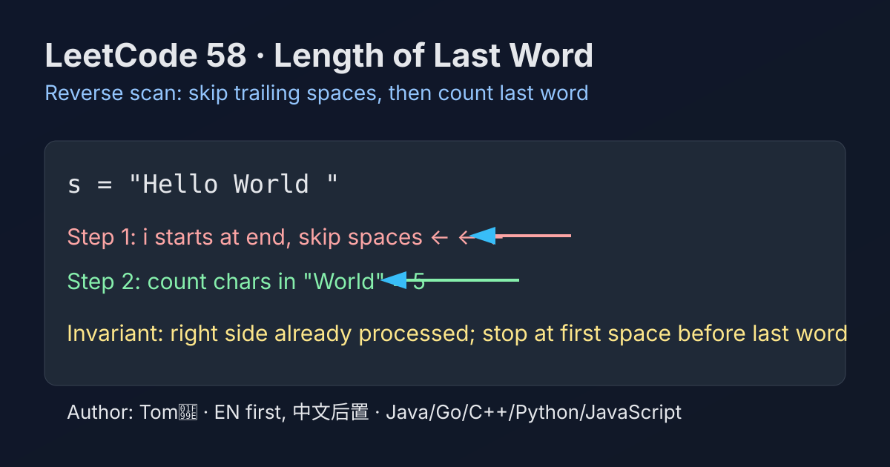

LeetCode 58: Length of Last Word (Reverse Scan)
LeetCode 58StringReverse ScanToday we solve LeetCode 58 - Length of Last Word.
Source: https://leetcode.com/problems/length-of-last-word/

English
Problem Summary
Given a string s containing words and spaces, return the length of its last word. A word is a maximal substring containing only non-space characters.
Key Insight
The last word is nearest to the right boundary. So scan from right to left: skip trailing spaces first, then count non-space characters until the next space or start of string.
Brute Force and Why Insufficient
A straightforward split-based approach (s.trim().split(" ")) can work, but creates extra substrings/arrays. Reverse scan is cleaner and uses constant auxiliary space.
Optimal Algorithm (Step-by-Step)
1) Set index i = n - 1.
2) While i >= 0 and s[i] == ' ', move left.
3) Initialize len = 0.
4) While i >= 0 and s[i] != ' ', increment len and move left.
5) Return len.
Complexity Analysis
Time: O(n).
Space: O(1).
Common Pitfalls
- Forgetting to skip trailing spaces first.
- Mis-handling all-space strings (constraints usually guarantee at least one word, but logic should still be robust).
- Off-by-one mistakes near index 0.
Reference Implementations (Java / Go / C++ / Python / JavaScript)
class Solution {
public int lengthOfLastWord(String s) {
int i = s.length() - 1;
while (i >= 0 && s.charAt(i) == ' ') i--;
int len = 0;
while (i >= 0 && s.charAt(i) != ' ') {
len++;
i--;
}
return len;
}
}func lengthOfLastWord(s string) int {
i := len(s) - 1
for i >= 0 && s[i] == ' ' {
i--
}
length := 0
for i >= 0 && s[i] != ' ' {
length++
i--
}
return length
}class Solution {
public:
int lengthOfLastWord(string s) {
int i = (int)s.size() - 1;
while (i >= 0 && s[i] == ' ') i--;
int len = 0;
while (i >= 0 && s[i] != ' ') {
len++;
i--;
}
return len;
}
};class Solution:
def lengthOfLastWord(self, s: str) -> int:
i = len(s) - 1
while i >= 0 and s[i] == ' ':
i -= 1
length = 0
while i >= 0 and s[i] != ' ':
length += 1
i -= 1
return lengthvar lengthOfLastWord = function(s) {
let i = s.length - 1;
while (i >= 0 && s[i] === ' ') i--;
let len = 0;
while (i >= 0 && s[i] !== ' ') {
len++;
i--;
}
return len;
};中文
题目概述
给定一个由单词和空格组成的字符串 s，返回最后一个单词的长度。单词定义为由非空格字符组成的最长连续子串。
核心思路
最后一个单词一定靠近字符串右端。先从右往左跳过末尾空格，再继续往左统计连续非空格字符个数，直到遇到空格或越界。
朴素解法与不足
可以用 trim + split 做：s.trim().split(" ")，取最后一个元素长度。但会创建额外字符串和数组。反向扫描更直接，也只需 O(1) 额外空间。
最优算法（步骤）
1）令 i = n - 1。
2）当 i >= 0 且 s[i] == ' ' 时持续左移。
3）初始化 len = 0。
4）当 i >= 0 且 s[i] != ' ' 时，len++ 并左移。
5）返回 len。
复杂度分析
时间复杂度：O(n)。
空间复杂度：O(1)。
常见陷阱
- 忘记先跳过尾部空格。
- 边界条件写错导致下标越界。
- 对全空格输入处理不稳（即使题目通常保证至少有一个单词）。
多语言参考实现（Java / Go / C++ / Python / JavaScript）
class Solution {
public int lengthOfLastWord(String s) {
int i = s.length() - 1;
while (i >= 0 && s.charAt(i) == ' ') i--;
int len = 0;
while (i >= 0 && s.charAt(i) != ' ') {
len++;
i--;
}
return len;
}
}func lengthOfLastWord(s string) int {
i := len(s) - 1
for i >= 0 && s[i] == ' ' {
i--
}
length := 0
for i >= 0 && s[i] != ' ' {
length++
i--
}
return length
}class Solution {
public:
int lengthOfLastWord(string s) {
int i = (int)s.size() - 1;
while (i >= 0 && s[i] == ' ') i--;
int len = 0;
while (i >= 0 && s[i] != ' ') {
len++;
i--;
}
return len;
}
};class Solution:
def lengthOfLastWord(self, s: str) -> int:
i = len(s) - 1
while i >= 0 and s[i] == ' ':
i -= 1
length = 0
while i >= 0 and s[i] != ' ':
length += 1
i -= 1
return lengthvar lengthOfLastWord = function(s) {
let i = s.length - 1;
while (i >= 0 && s[i] === ' ') i--;
let len = 0;
while (i >= 0 && s[i] !== ' ') {
len++;
i--;
}
return len;
};
Comments